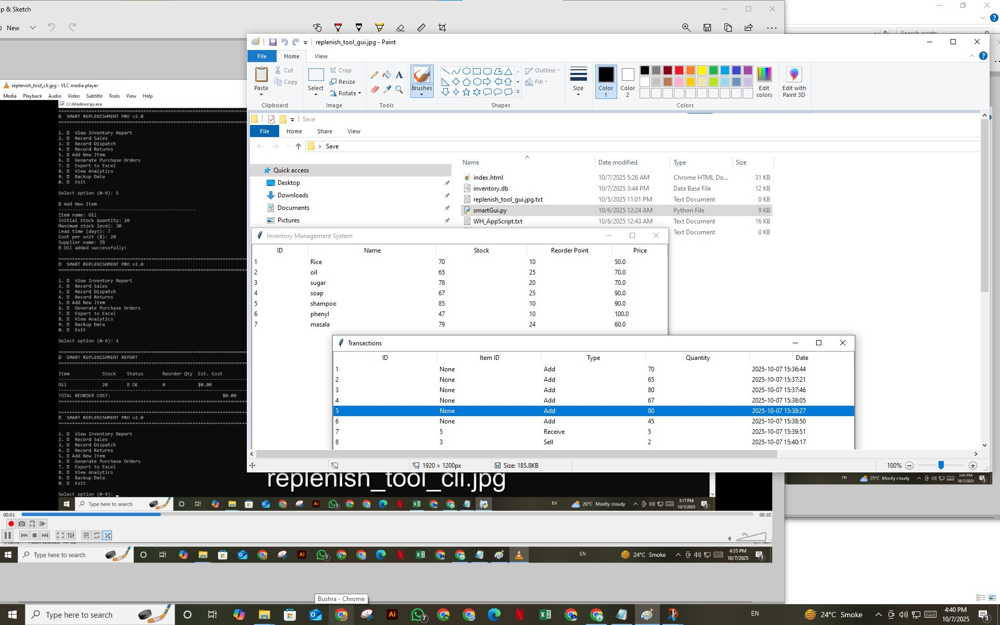

Featured Automation Case Studies (The Results)
1. End-to-End Warehouse Documentation System
The Business Challenge (Problem):
Order processing took **4+ hours daily** and was prone to human errors in documentation. This hindered scalability.
The Solution (Process & Technology):
A full-cycle, one-click system using **Google Apps Script** and custom logic. Features **Email Order Fetching**, automatic segregation, and a **One-Click Output Engine**.
Measurable Results (Impact):
Reduced order processing time from 4 hours to **under 15 minutes (94% savings)**. Achieved **95%+ elimination of data entry errors**. Enabled **3X order volume** capacity.
View Source Code & Demo
View Live Data Structure
2. Predictive Stock Replenishment & Inventory Control Tool
The Business Challenge (Problem):
Frequent **stock-outs** and inconsistent, unknown **lead times** led to missed sales and customer delays.
The Solution (Process & Technology):
A data-powered tool built with **Python** (CLI + GUI) that automates inventory health. Logic calculates the **Reorder Point (ROP)** by factoring in Lead Time and necessary **Buffer Stock** based on demand variability.

Measurable Results (Impact):
Provided a **Smart System** for **Peace of Mind**. Established clear, **data-backed lead times** and significantly reduced the frequency of stock-outs.
View Source Code & Demo
3. Mobile-First, Bilingual Invoice & Quote Maker
The Market Challenge (Problem):
Freelancers and artisans lacked a **reliable, free, mobile-first** tool. They struggled with unprofessional billing, lacking features like **QR codes** and clean PDF outputs.
The Solution (Front-End & Feature Set):
A **free, mobile-first web tool** using **HTML, CSS, and JS**. Features **Bilingual Accessibility** (Urdu/English), **POS-Style PDF Generation**, live calculation of totals, and **QR code** integration.


Measurable Results (Impact):
Democratized access to professional billing, instantly elevating the professionalism of users. The scalable architecture is ready for future premium expansion.
Make Yourself Here
View Invoice Demo